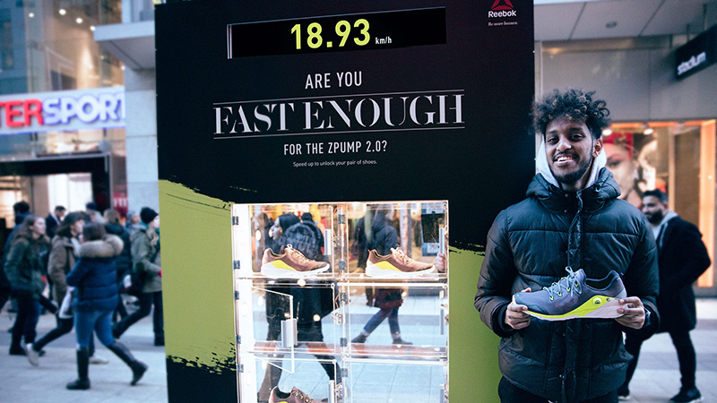

案例发生了什么
Reebok 在斯德哥尔摩街头设置了一块带测速装置和鞋柜的互动广告牌。路人沿指定路线从装置前跑过，屏幕实时显示速度；达到超过 17 km/h 的门槛，就能解锁陈列柜并获得一双 ZPump 2.0。传统户外广告只能说“这是一双快鞋”，这个装置则要求用户先证明自己够快，再把产品作为立刻可得的奖品。品牌主张、参与规则和奖励在十几秒内形成闭环。
真实执行素材
以下图片来自权利方、球队、品牌、制作方或奖项原档；按执行链完整度灵活收录，不限制固定张数，逐图保留主源链接。


案例启示
案例启示
关键动作
- 把产品的“速度”定位写成清晰阈值：17 km/h。
- 用街头测速即时判定结果，让挑战公开、可观看、没有复杂报名流程。
- 让广告牌本体兼任计时器、裁判和奖品柜，避免体验与产品分离。
传播与商业机制
主张即规则
“够不够快”既是广告文案，也是用户必须完成的任务。
即时兑现
达到阈值后当场开柜拿鞋，缩短从注意到产品体验的距离。
围观放大
跑动、测速和开柜都有明确结果，路人天然会停下观看。
可复用的方法从产品最核心的可测指标出发，设计一个公开、短时、即时反馈的挑战，再让商品承担奖品。
适用条件与风险
- 街道跑动路线必须避开交通和行人冲突，速度门槛也要避免鼓励危险冲刺。
- 公开案例没有披露奖品总量、参与人数、转化率或销售增量。
资料与来源
官方资料与原始来源
B Media Group2016 · Are You Fast Enough? Reebok Running Billboard打开原始来源 ↗
来源备注互动门槛、装置和奖品机制来自执行档案；没有将媒体转载中的传播形容词当成效果数据。